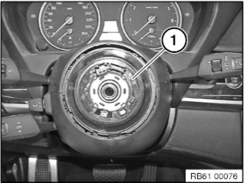
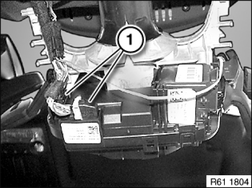
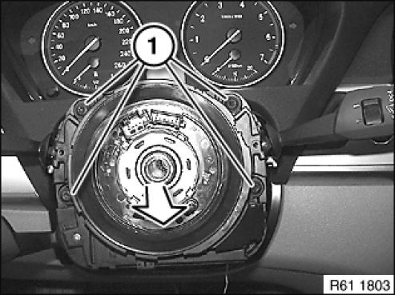
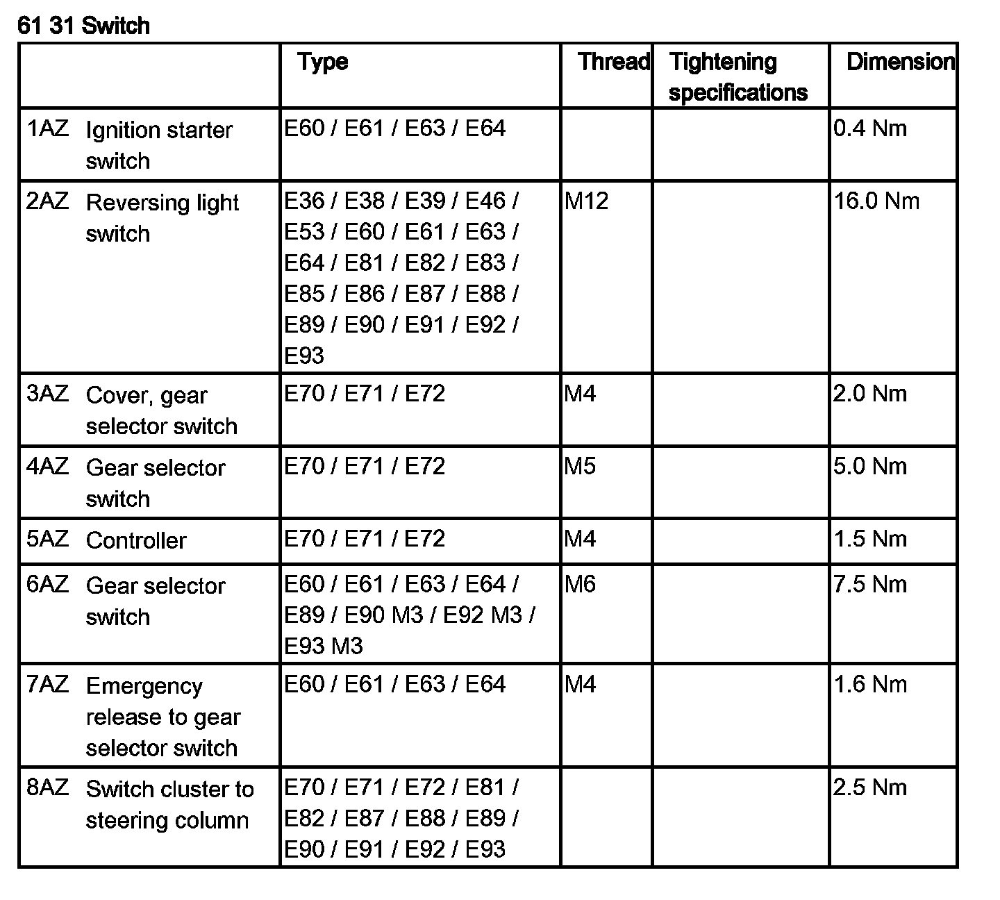
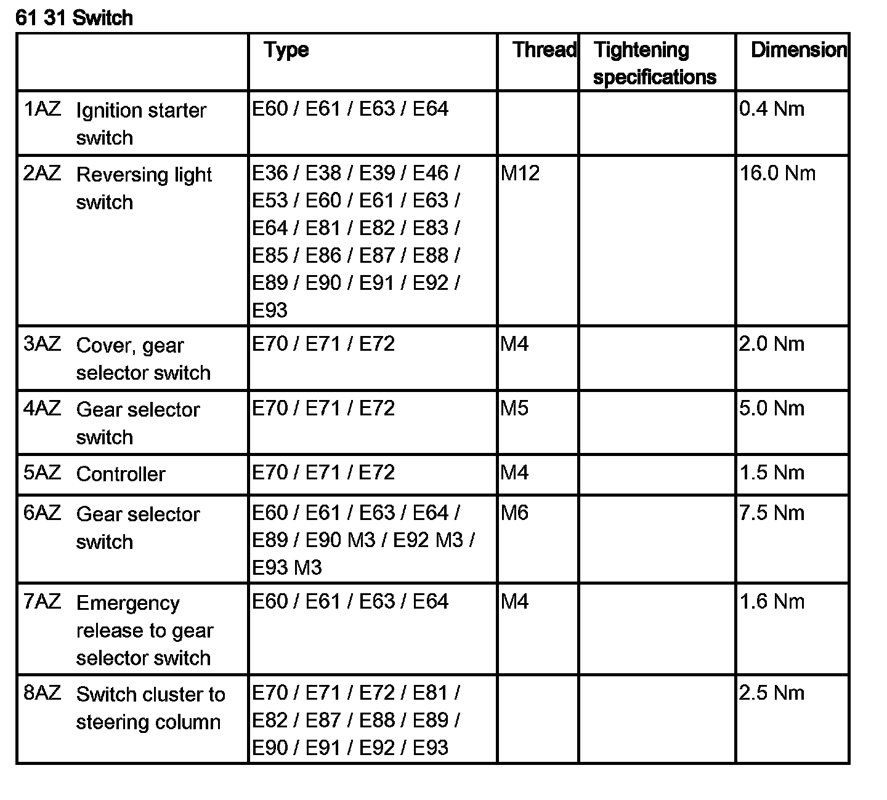
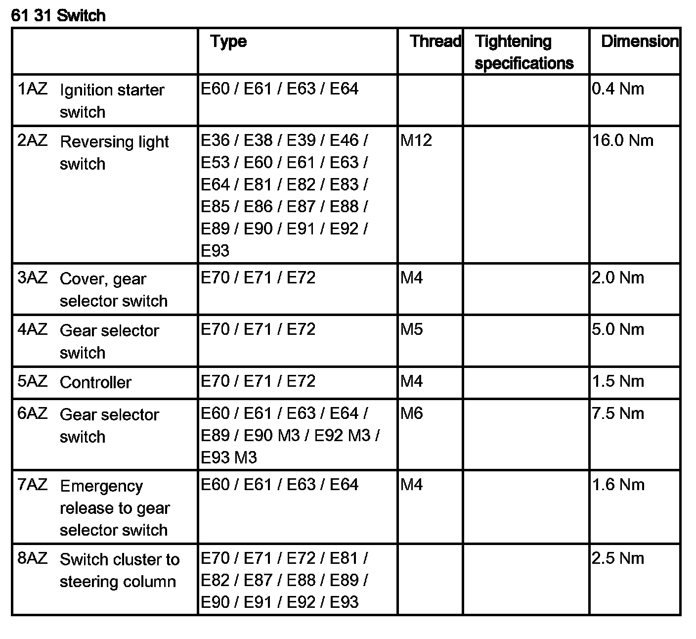
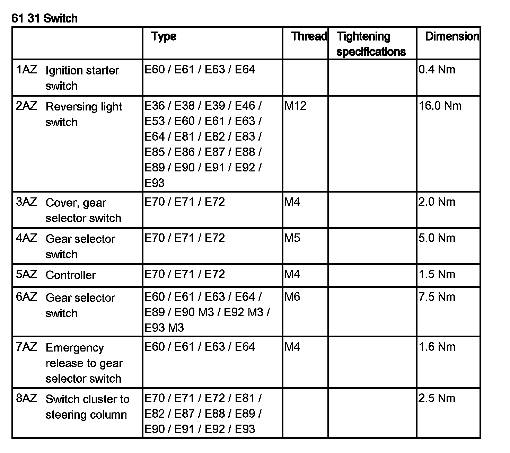
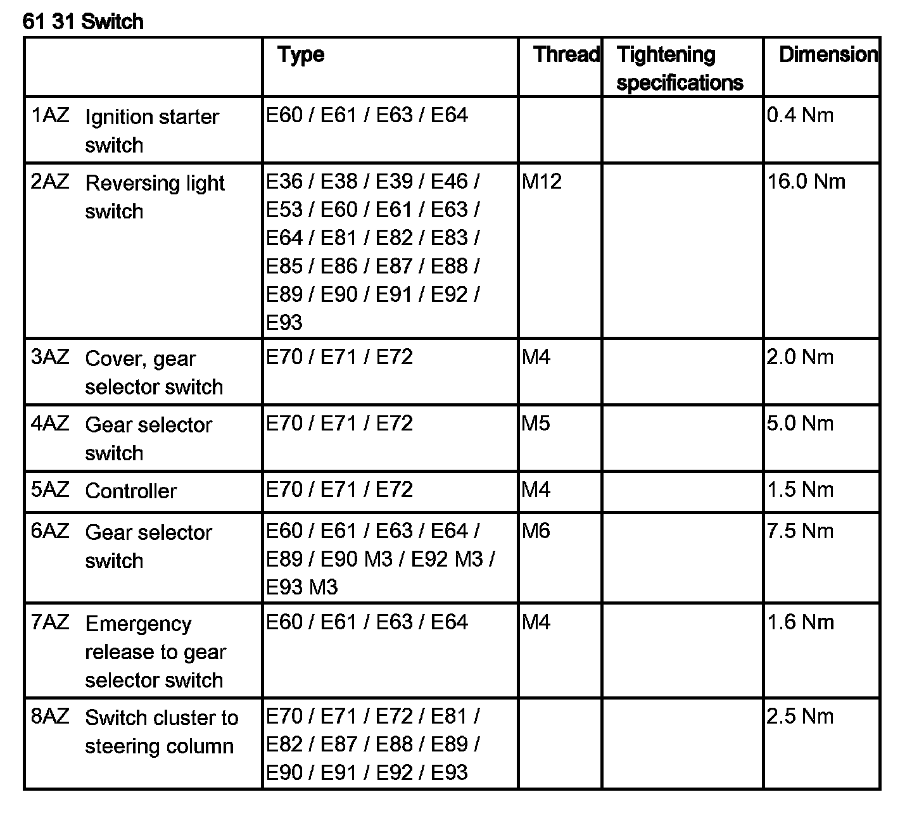
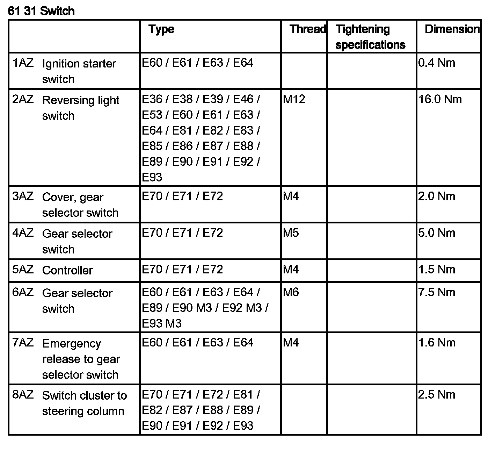

Combination Switch: Service and Repair
61 31 008 Removing And Installing/Replacing Steering-Column Switch Cluster

WARNING:
Move wheels into straight-ahead position and do not alter this position during the repair work.
Do not under any circumstances turn the steering column switch cluster when the steering wheel is removed.

Necessary preliminary tasks:
- Remove steering wheel
- Remove steering column shroud lower section
- If necessary, remove switch for steering column adjustment

WARNING: Do not twist the coil spring cassette (1).
NOTE: The coil spring cassette (1) may be replaced separately, if necessary.

Disconnect plug connection (1).

Release screws (1).
Tightening torque 61 31 8AZ.
Remove steering-column switch cluster in direction of arrow.
Installation note:
The steering column switch cluster is installed in reverse sequence.
Carry out steering angle sensor adjustment.

Replacement:
- Remove volute spring cassette
- Carry out vehicle programming/encoding
NOTE:
- If replacement of the steering column switch cluster is initiated via Progman, the steering column switch cluster is coded indirectly via the DSC control unit
- If coding is cancelled, first adjust the steering angle sensor; this makes a brand-new steering-column switch cluster coding-compatible again if necessary
- Then code the DSC control unit again
- Carry out steering angle sensor adjustment
NOTE:
- If steering angle sensor adjustment is cancelled, first code the DSC control unit
- Then adjust the steering angle sensor again
- Vehicles with active steering:
- Steering angle sensor is adjusted by means of initial operation / adjustment of active front steering
- If necessary, proceed in accordance with instructions





